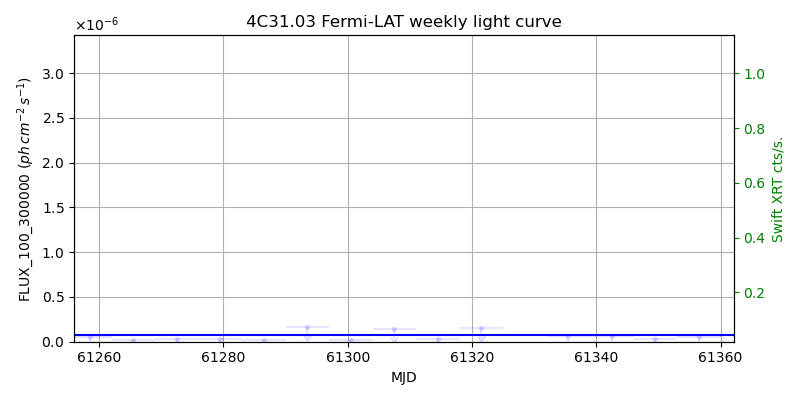
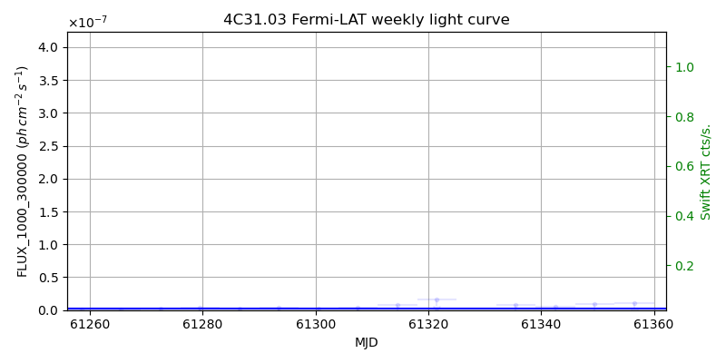

LAT Lightcurve site: https://fermi.gsfc.nasa.gov/ssc/data/access/lat/msl_lc/source/4C_31d03
Swift site: https://www.swift.psu.edu/monitoring/source.php?source=4C31.03
NED: Query
Time of last update of this page: UT: 2026-11-20 16:11 (MJD: 61364.675)
| Property | Value |
|---|---|
| R.A. | 1:12:50.40 |
| Dec. | 32:08:16.8 |
| z | 0.603 |
| 3FGL SpectrumType | PowerLaw |
| 3FGL PL Index | 2.36 |
| 3FGL Flux_100_300000 | 7.01e-08 1 / (s cm2) |
| 3FGL Flux_1000_300000 | 3.04e-09 1 / (s cm2) |
| 3FGL Flux >200 GeV | 2.22e-12 1 / (s cm2) |
| 3FGL Extrap. Crab >200 GeV | 0.01 |
| 3FGL Flux After EBL Absorption >200GeV | 2.12e-13 1 / (s cm2) |
| 3FGL EBL Crab Fraction >200GeV | 0.00 |
| MJD | dMJD | Flux | dFlux | Frac3FGL | FracCrab>200GeV | EBLFracCrab>200GeV |
|---|---|---|---|---|---|---|
| 61359.50 | 0.50 | 3.79e-07 | 0.00e+00 | 0.00 | 0.00 | 0.00 |
| 61360.50 | 0.50 | 4.65e-07 | 0.00e+00 | 0.00 | 0.00 | 0.00 |
| 61361.50 | 0.50 | 1.21e-07 | 0.00e+00 | 0.00 | 0.00 | 0.00 |
| 61362.50 | 0.50 | 2.12e-07 | 0.00e+00 | 0.00 | 0.00 | 0.00 |
| 61363.50 | 0.50 | 1.59e-06 | 0.00e+00 | 0.00 | 0.00 | 0.00 |

| MJD | dMJD | Flux | dFlux | Frac3FGL | FracCrab>200GeV | EBLFracCrab>200GeV |
|---|---|---|---|---|---|---|
| 61321.50 | 3.50 | 1.49e-07 | 0.00e+00 | 0.00 | 0.00 | 0.00 |
| 61335.50 | 3.50 | 6.02e-08 | 0.00e+00 | 0.00 | 0.00 | 0.00 |
| 61342.50 | 3.50 | 6.75e-08 | 0.00e+00 | 0.00 | 0.00 | 0.00 |
| 61349.50 | 3.50 | 3.14e-08 | 0.00e+00 | 0.00 | 0.00 | 0.00 |
| 61356.50 | 3.50 | 5.63e-08 | 0.00e+00 | 0.00 | 0.00 | 0.00 |

| MJD | dMJD | Flux | dFlux | Frac3FGL | FracCrab>200GeV | EBLFracCrab>200GeV |
|---|---|---|---|---|---|---|
| 61359.50 | 0.50 | 1.74e-08 | 0.00e+00 | 0.00 | 0.00 | 0.00 |
| 61360.50 | 0.50 | 1.69e-08 | 0.00e+00 | 0.00 | 0.00 | 0.00 |
| 61361.50 | 0.50 | 1.97e-08 | 0.00e+00 | 0.00 | 0.00 | 0.00 |
| 61362.50 | 0.50 | 4.12e-08 | 0.00e+00 | 0.00 | 0.00 | 0.00 |
| 61363.50 | 0.50 | 4.54e-08 | 0.00e+00 | 0.00 | 0.00 | 0.00 |

| MJD | dMJD | Flux | dFlux | Frac3FGL | FracCrab>200GeV | EBLFracCrab>200GeV |
|---|---|---|---|---|---|---|
| 61321.50 | 3.50 | 1.67e-08 | 0.00e+00 | 0.00 | 0.00 | 0.00 |
| 61335.50 | 3.50 | 7.46e-09 | 0.00e+00 | 0.00 | 0.00 | 0.00 |
| 61342.50 | 3.50 | 5.07e-09 | 0.00e+00 | 0.00 | 0.00 | 0.00 |
| 61349.50 | 3.50 | 9.78e-09 | 0.00e+00 | 0.00 | 0.00 | 0.00 |
| 61356.50 | 3.50 | 1.13e-08 | 0.00e+00 | 0.00 | 0.00 | 0.00 |
--------------------------------------------------------- Using user-supplied coords: 1:12:50.40 32:08:16.8 2000 --------------------------------------------------------- FLWO UT night of: 2026-11-21 Local Sid. @ Midnight: 03:37 Sunset (-15.0) (local, UT): 18:33 01:33 Sunrise (-15.0) (local, UT): 05:47 12:47 Moonrise (local, UT): Moonset (local, UT): 03:40 10:40 Moon phase: 0.85 --------------------------------------------------------- AzTime LSID UT Obj_el Obj_az Mn_el Mn_az Sep. --------------------------------------------------------- 18:33 22:09 01:33 51.0 76.4 47.9 117.4 26.5 19:03 22:39 02:03 57.3 78.4 53.3 125.0 26.3 19:33 23:09 02:33 63.6 80.3 58.2 134.7 26.1 20:03 23:39 03:03 69.9 81.9 62.3 146.9 26.0 20:33 00:09 03:33 76.2 83.2 65.1 162.1 25.8 21:03 00:39 04:03 82.6 83.0 66.3 179.7 25.6 21:33 01:09 04:33 88.8 58.7 65.4 197.5 25.5 22:03 01:39 05:03 84.6 278.2 62.9 213.2 25.3 22:33 02:09 05:33 78.3 276.6 59.0 225.9 25.1 23:03 02:39 06:03 71.9 277.6 54.2 235.9 25.0 23:33 03:09 06:33 65.6 279.2 48.9 243.9 24.8 00:03 03:39 07:03 59.3 281.0 43.2 250.4 24.7 00:33 04:10 07:33 53.0 282.9 37.3 255.9 24.5 01:03 04:40 08:03 46.8 285.1 31.2 260.7 24.3 01:33 05:10 08:33 40.7 287.3 25.1 265.1 24.2 02:03 05:40 09:03 34.6 289.7 19.0 269.2 24.0 02:33 06:10 09:33 28.6 292.2 12.9 273.0 23.8 03:03 06:40 10:03 22.8 295.0 6.8 276.9 23.7 03:33 07:10 10:33 17.1 297.9 1.0 280.7 23.5 04:03 07:40 11:03 11.5 301.0 -4.9 284.7 23.3 04:33 08:10 11:33 6.2 304.5 -11.1 288.8 23.2 05:03 08:40 12:03 1.3 308.2 -16.8 293.2 23.0 05:33 09:10 12:33 -2.5 312.2 -22.3 298.1 22.8 05:47 09:25 12:47 -6.1 314.3 -24.8 300.5 22.8 --------------------------------------------------------- Dark hours >55 deg.: 0.00